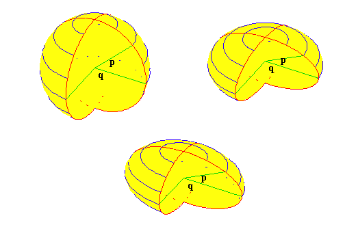
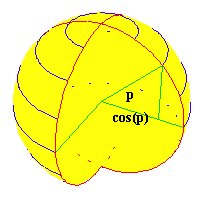
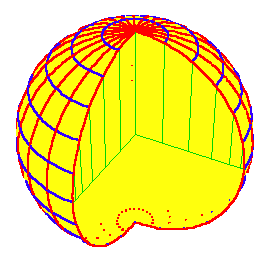
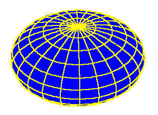
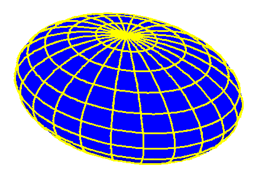

Riemann for Anti-Dummies Part 47
DEFEATING I. KANT
In the opening of his Habilitation lecture, Bernhard Riemann proposed to establish the foundations of geometry on a rigorous basis:
"Accordingly, I have proposed to myself at first the problem of constructing the concept of a multiply extended magnitude out of general notions of quantity. From this it will result that a multiply extended magnitude is susceptible of various metric relations and that space accordingly constitutes only a particular case of a triply-extended magnitude. A necessary sequel to this is that the propositions of geometry are not derivable from general concepts of quantity, but that those properties by which space is distinguished from other conceivable triply-extended magnitudes can be gathered only from experience".
Riemann's program poses a paradox for those habituated to the doctrine of Immanuel Kant and its more extreme, modern form--existentialism. How can the propositions of geometry be determined by experience?
Kant had insisted that:
"Space is not an empirical concept which has been derived from outer experiences. For in order that certain sensations be referred to something outside me...the representation of space must be presupposed. The representation of space cannot, therefore, be empirically obtained from the relations of outer appearance. On the contrary, this outer experience is itself possible at all only through that representation."..."Geometry is a science which determines the properties of space synthetically; and yet a priori. It must in its origin be intuition; for from a mere concept no propositions can be obtained which go beyond the concept as happens in geometry. For geometrical propositions are one and all apodeictic, that is, are bound up with the consciousness of their necessity; for instance that space has only three dimensions. Such propositions cannot be empirical or, in other words, judgments of experience, nor can they be derived from any such judgments."
Kant was not very original. Nearly two centuries earlier, Johannes Kepler, through his discovery of universal gravitation, had already liberated science from similar Aristotelean dogmas that, from the murder of Archimedes until the Renaissance, had enslaved European civilization. Kant was deployed to put the chains back on. Those doctrines had taught that experience, (which, for them, was limited to sense perception), can tell us nothing about the physical world. For example, our experience of phenomena such as the motion of the planets and other heavenly bodies, is limited to the perceptions of the changes of position of points of light on the inside of a great sphere of unknown radius, whose center is always the location of the observer. For the Aristoteleans, the actual motions, as well as the principles that govern them, are inherently unknowable, and so they must be referred to some a priori determined set of propositions, such as those of Ptolemy, Copernicus or Brahe. These propositions, in turn, are ultimately derived from Euclidean-type axioms, postulates and definitions, which Kant insisted, are the only possible form by which we can conceive of space:
"Space is a necessary a priori representation, which underlies all outer intuitions. We can never represent to ourselves the absence of space, though we can quite well think it as empty of objects. It must therefore be regarded as the condition of the possibility of appearances, and not as a determination dependent upon them. It is an a priori representation, which necessarily underlies outer appearances."
According to Kant: these propositions are not decidedly truthful; they make no judgement about the actual motions; they are the form by which the appearances must be represented; and nothing can happen that is not possible under these propositions.
When you begin to think about this, you come face to face with the fundamental question of science (and also, politics, history and art): What is experience? Is it sense perception? Therein lies Kant's trickery, for if experience is limited to sense perception, then indeed, it can tell us nothing about the propositions of geometry. As Kant's sophistry insists: "Were this representation of space a concept acquired a posteriori, and derived from outer experience in general, the first principles of mathematical determination would be nothing but perceptions. They would therefore all share in the contingent character of perception; that there should be only one straight line between two points would not be necessary, but only what experience always teaches. What is derived from experience has only comparative universality, namely, that which is obtained through induction. We should therefore only be able to say that, so far as hitherto observed, no space has been found which has more than three dimensions."
However, Riemann had something far different in mind when he spoke of experience:
"There arises from this the problem of searching out the simplest facts by which the metric relations of space can be determined, a problem which in the nature of things is not quite definite; for several systems of simple facts can be stated which would suffice for determining the metric relations of space; the most important for present purposes is that laid down for foundations by Euclid. These facts are, like all facts, not necessary but of a merely empirical certainty; they are hypotheses..."
For Riemann, as for all humans not self-degraded into Aristotelean/Kantian bestiality, experience is not sense-perception; it is the active interaction of the mind with the universe, of which it is a part. It is, as Plato insists, the formation of hypotheses, higher hypotheses, and hypothesizing the higher hypothesis. It is the investigator, investigating, how he is investigating what is being investigated. Or, as for Apollo, who sings in Percy Shelley's Hymn, "I am the eye with which the Universe beholds itself and knows itself divine;"
The propositions of geometry can, and must, be derived from this type of experience and Riemann advanced the general methods for how this is done. He divides this task into two steps, both of which rested on foundations laid by Gauss. The first, as indicated above, is the determination of the general notion of multiply-extended magnitude. Here Riemann cites Gauss's second treatise on bi-quadratic residues and his fundamental theorem of algebra. In those works, as well as other unpublished discussions, Gauss attacked Kant's view as an "illusion," and he advanced the concepts begun with the investigations of the Pythagoreans, Archytas and Plato, that physical action, not a priori intuition, gives rise to our concept of extension, as exemplified by the different principles, or powers, of physical action that extend a line, square, or cube.
In each type of action, the determination of the essential, distinguishing characteristic, Riemann noted, always leads back to "n" determinations of magnitude, in which "n" signifies the relative degree of the power governing the action. For example, a cube, which is determined by a triply-extended magnitude, cannot be determined by the doubly-extended square, nor a square by a simply-extended line.
However, there is still another consideration:
" ...there follows as second of the problems proposed above, an investigation into the relations of measure that such a manifold is susceptible of, also into the conditions which suffice for determining these metric relations. These relations of measure can be investigated only in abstract notions of magnitude and can be exhibited connectedly only in formulae; upon certain assumptions, however, one is able to resolve them into relations which are separately capable of being represented geometrically, and by this means it becomes possible to express geometrically the results of the calculation. Therefore if one is to reach solid ground, an abstract investigation in formulae is indeed unavoidable, but its results will allow an exhibition in the clothing of geometry. For both parts the foundations are contained in the celebrated treatise of Privy Councillor Gauss upon curved surfaces."
Thus, the question of discovering a physical geometry requires determining both the "n" determinations of magnitude, and their measure relations. Neither of these can be given a priori. How, then, can these matters be discovered from human cognitive, (as opposed to Kantian) experience?
The last three installments of this series, (Riemann for Anti-Dummies Parts 44, 45, and 46), explored the essential foundations of Gauss' and Riemann's approach. There we showed how Gauss, from his very earliest work under the tutelage of Kaestner and Zimmerman, recognized that only physical principles, not definitions, can lay the foundations for geometry, as, for example, the determination of what is a straight-line. From there, Gauss showed that these physical principles determine a characteristic curvature from which the measure relations of a surface are derived, and that these general principles of curvature are expressed, in the smallest parts, by the characteristics of the "shortest lines", or geodesics, of the surface. What remains to discuss is this discovery's inversion. How can the physical principles of the curvature of the surface be determined from the characteristics of the geodesics as measured by small changes in those geodesics?
Gauss' work on this inverse problem is of crucial significance, as this is the form of investigation usually confronted in science, politics, history and art. We cannot know these physical principles by sense perception, but we can perceive their effects by some small measurable change, from which, by hypothesizing, we can determine the general principles that are determining that change. Kepler determined the general principles of curvature of the solar system as a whole, from small measured changes in the relationship between the orbits of Mars and Earth. Leibniz and Bernoulli determined the general principles of least- action from small measured changes in the shape of a hanging chain. Gauss determined the solar system's harmonic dissonance that had been indicated by Kepler, from Piazzi's very small measurements of Ceres' arc. LaRouche determined the general direction of world history by measured changes in the cultural/mental outlook of the population following the death of FDR.
As Riemann indicated, an exploration of Gauss' work in this direction is impossible without resort to abstract concepts expressible by formulae, but, these results are always capable of geometrical representation. For pedagogical purposes we will minimize the former and emphasize the latter, but limited reference to formulae are unavoidable, and will always be accompanied by the appropriate geometrical representation.
To begin to get a handle on the principles involved, take a simple case a line. When considered as a simply-extended magnitude, a line can be increased or decreased only by action along its length, that is, back and forth. Such changes can be measured only by increments of more or less, and expressed by rational numbers.
However, when that line is understood to be generated from a doubly-extended magnitude, such as the diagonal of a square or rectangle, its increases or decreases are measured by an entirely different set of relationships, as demonstrated by Plato in the Meno and Theatetus dialogues. In this case, the line is increased or decreased along its length, but only in a connected way, to changes in the lengths of the side of the square or rectangle. These changes cannot be measured by the simple ideas of more, or less, as expressed by rational numbers. Rather, they express the type of relationship that has come to be known by the "Pythagorean theorem", which as Pythagoras and Plato emphasized, are incommensurable with simply-extended magnitudes.
Draw a rectangle and call the length of one side "x" and the length of the other side "y". By the Pythagorean theorem, the length of the diagonal "s" can be measured as the square root of the sum of the squares of the two sides, or in shorthand, s=√(x2+y2). If the diagonal is extended by a small amount "ds", the sides of the rectangle will be increased by proportional small amounts "dx" and "dy". ("ds", "dx", and, "dy" are Leibniz' notation for these infinitesimal increments, which he called differentials.) If this action is taking place on a Euclidean flat plane, then ds, dx and dy, will express the Pythagorean relationship, ds=√(dx2+dy2).
Thus, contrary to the textbook versions, the Pythagorean relationship is not an arbitrary formula; it expresses a characteristic relationship of a certain type of surface--a Euclidean flat plane. Inversely, if a physical process is measured by the Pythagorean relationship expressed above, that action is occurring in a Euclidean flat plane.
This measurable physical relationship, not Kant's dictum of a priori certitude, is the only reality of a Euclidean flat plane. And, since real world physical measurements express a different relationship, the physical reality of a Euclidean flat plane is not only not necessary, it is illusory .
But, if our cognitive experience, i.e. physical measurement, determines that the Pythagorean relationship doesn't hold, what relationship expresses a doubly-extended magnitude? A Kantian will fly into a fit of rage at this paradox. Kant insists that Euclidean space is the only possible way one can think about space, therefore, for the Kantian, Euclidean space must be the only space possible. And so, the Kantian will demand the world be treated as if it were Euclidean, even if physical measurements tell us otherwise. Fakers in the tradition of Gallileo's deceitful attempt to curve-fit the catenary into a parabola, will have no problem with this. They will suggest limiting physical measurements to small enough regions, that the deviation from the Pythagorean relationship is below the errors of measurement. Such chicanery is, however, only self-deception, as the deviation from flatness, no matter how small it may seem, still exists, and, sooner or later, judgements made on that delusion will become impossible to ignore (as, for example, how the ongoing financial crisis was ignored by believers in such "New Economy" frauds as exemplified by the Winstar madness).
Gauss, of course, rejected such follies. He recognized that the Pythagorean relationship, as expressed in Euclidean geometry, was not sacrosanct. Rather, it was merely a special case of a more general principle. Rather than cling to the special case, Gauss discovered the foundations on which more the general principle was based.
To gain an understanding of Gauss' discovery, it is pedagogically efficient to work through several examples, and then abstract from them the general principle at work.
Begin with the case of the physically determined celestial sphere. This surface is physically determined by the position of the observer and the direction of the pull of gravity. The former determines the center of the sphere and the latter determines the poles and the horizon. If we are bound by Kant's constriction that we can only think of space as infinitely extended in three directions, then this sphere sits like a large object surrounded by empty space.
But, Gauss was free from Kantianism, and he understood the celestial sphere as a manifold of physical action, produced by two mutually inter-dependent angles: the angles around the horizon and the angles perpendicular to it. (For pedagogical simplicity, I will refer to these angles by the familiar names latitude and longitude respectively.)
All positions on the celestial sphere can be determined by these two physical parameters. (Thus, for the sphere, n=2, in Riemann's terms of "n" determinations of magnitude.) From this relationship, Gauss constructed what is called a "parametric formula" in which the surface of the sphere is expressed entirely by these two parameters.
All the longitudinal circles have a common center, i.e. the observer. Positions along any one of these circles can be determined by a function of the angle from the horizon to the zenith. If this angle is called "p", then any position along a circle of longitude can be determined as a function of the cosine and the sine of the angle "p". (See Figure 1.) Each of these circles of longitude can be distinguished from one another, by another angle, as measured around the horizon. If that angle is called "q", then positions around this circle can be determined as a function of the cosine and sine of angle "q".
Figure 1  |
Thus, for all the positions along a single circle of longitude, q is constant while p varies, whereas for all positions along a single circle of latitude, p is constant while q varies. However, there is a significant difference between the two types of circles. The center of all the circles of longitude are the same as the center of the sphere, consequently, all circles of longitude are great circles. But, the circles of latitude all become smaller as they get farther from the horizon and closer to the poles. How much smaller they get, is function of angle p, that is, how close they are to the poles. From the geometry of the sphere, the radii of the circles of latitude are proportional to the cosine of angle p. (See figure 2.)
|
Figure 2  |
From this, all positions on a sphere can be reduced to determinations of the two parameters p and q, which reflect the physical curvature of the sphere. (footenote 1.) The empty box, which Kant insisted on, just disappeared, perhaps into the empty corners of his brain from whence it came.
Gauss now investigated the relationship between the length of an arbitrary geodesic of the sphere and the angles p and q, in order to determine a way of measuring the general principles of curvature of the surface from small measured changes in the geodesic.
To do this, Gauss established a more general form of the Pythagorean relationship. In the case of the sphere, a geodesic line can be thought of as a diagonal of a spherical rectangle, whose sides are circles of longitude and latitude. But, unlike the Pythagorean in the Euclidean flat plane, the relationship between the sides of the spherical rectangles are changing, depending on their position with respect to the horizon and the poles. Specifically, the latitudinal sides will get shorter, by a factor proportional to the cosine of angle p, as the longitudinal sides increase towards the poles. (See Figure 3.) Thus, the "spherical Pythagorean" must measure not only the relationship of the diagonal to the sides, but the also the change in this relationship as the relationship between the sides themselves changes. From this, Gauss showed, that the form of the "spherical Pythagorean", is that the length of the geodesic "ds" =√((Cos[p])2dp2 + dq2) where ds is the change in the length of the diagonal and dp and dq are the changes in longitude and latitude. The coefficient Cos[p]2 expresses the shortening of the latitude lines as they get closer to the poles.
Figure 3  |
Consequently, if one is making physical measurements along what appears to be a "straight-line", and the relationship measured corresponds to this "spherical Pythagorean", then that "straight-line" is a geodesic on a sphere.
To further develop this idea, continue in this same vein to the two other examples used in Riemann for Anti-Dummies Part 46, the spheroid and the ellipsoid.
For the spheroid, a parametric formula can be constructed that expresses the geometrical relationship that the lines of latitude get shorter as they approach the poles, while the lines of longitude get longer. (See Figure 4.) In this case, the "spheroidal Pythagorean" must express the relationship between the length of the geodesic, "ds", and the changing relationship between the lengths of the circles of latitude and the ellipses of longitude. This produces a somewhat more complicated formula for the "spheroidal Pythagorean", but its geometrical representation can be gleaned from the accompanying figure.
Figure 4  |
By inversion, if physical measurements along a "straight- line" reflect the relationship expressed by the "spheroidal Pythagorean", that "straight-line" must be a geodesic on a spheroid.
On the ellipsoid, as illustrated in the last installment, the relationship between the sides of the "ellipsoidal rectangles" changes as they move towards the poles and as they move around in the latitudinal direction as well. (See Figure 5.) Using Gauss' method, it is possible to calculate a formula for this "ellipsoidal Pythagorean", which enables us to make the same type of determinations about the general principles of curvature from small changes in the measurement of the "ellipsoidal geodesic".
Figure 5  |
In his treatise on curved surfaces, cited by Riemann in the habilitation paper, Gauss developed a general form of the Pythagorean that expressed the relationship between the geodesic line and the two determinations of magnitude of that surface. For purely illustrative purposes, the form of Gauss' generalized Pythagorean is, ds=√E2dp2+2Fdpdq+G2dq2, where, E, F, and G are themselves functions which express the changing relationship of the two parameters of the surface. E expresses the function by which p changes with respect to q; G expresses the function by which q changes with respect to p; and F expresses the function by which the area of the rectangle changes relative to changes in p and q. For the Euclidean flat plane, Gauss' Pythagorean reduces to the familiar form.
As Riemann indicated, this relationship in its most general form is expressed by the above formula, but, as in the above examples, its results can always be represented geometrically.
With this foundation laid by Gauss, Riemann went still further, to determine an even more general idea of a Pythagorean, not only for surfaces, but for manifolds of "n" determinations of magnitude. This leads into even more interesting areas, such as the one confronted in investigating physical processes in the very small and very large, or, in the biotic domain, where the characteristic of the geodesic is changing non-uniformly. To reach that point we must, however, first master the foundations laid by Gauss and Riemann, with some assistance of the insights gained from classical art, such as Beethoven's late string quartets.
FOOTNOTE
1. For those who wish to know, a parametric formula for the sphere is Cos[q] Cos[p], Sin[q]Cos[p], Sin[p]. For the spheroid and ellipsoid, each direction is multiplied by a simple factor.
{kind=link}
{kind=link}
{kind=link}
{kind=link}
{kind=link}